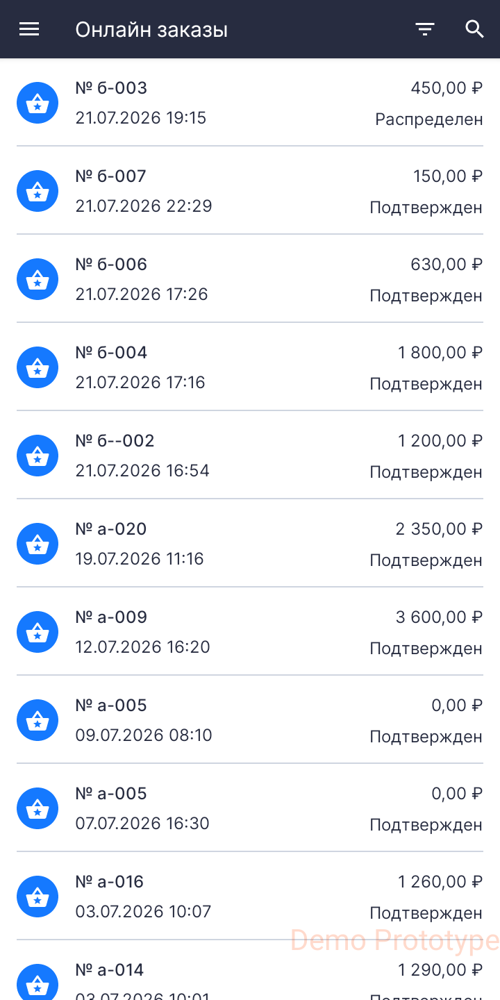
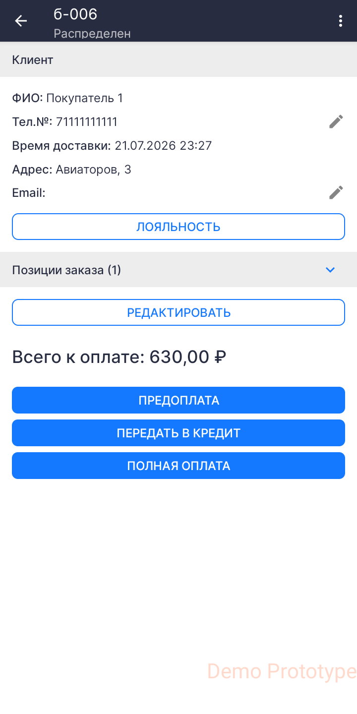
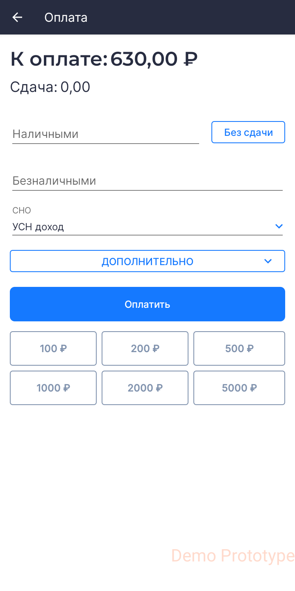
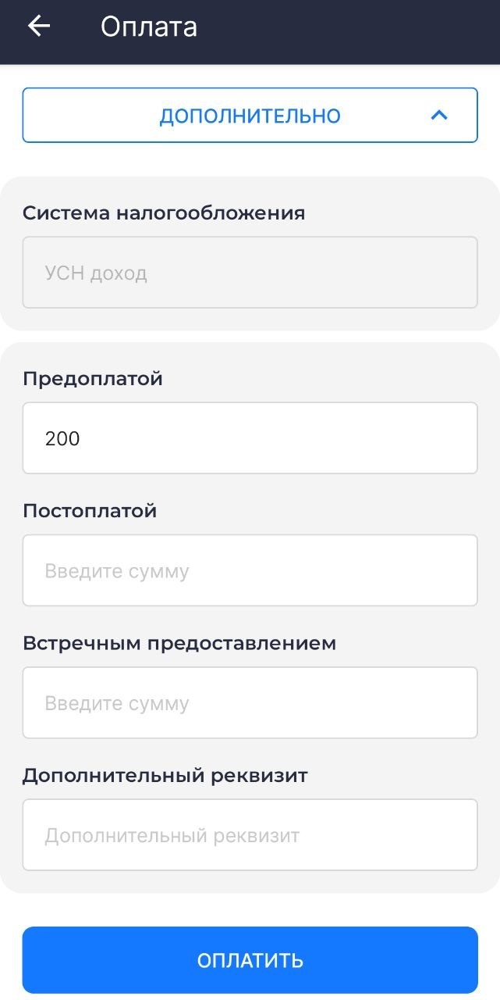

Руководство пользователя¶
Сокращения¶
ККТ — Контрольно-Кассовая Техника
ОФД — Оператор Фискальных Данных
РМК — Рабочее Место Кассира
СНО — Система Налогообложения
ФНС — Федеральная Налоговая Служба
ФФД — Формат Фискальных Документов
GTIN — Global Trade Item Number, глобальный идентификатор товара
POS-терминал — платёжный терминал, (Point of Sale — точка продажи)
Введение¶
Данный документ рассчитан на пользователей мобильного приложения «Касса 2.0» и описывает процедуру по редактированию справочника товаров и оформлению фискальных документов (чеков).
Запуск приложения¶
- При входе в приложение выберите учётную запись.
- Введите код доступа.
- Выберите организацию и торговый объект. Если в приложении задана одна организация или один торговый объект, то приложение выберет их автоматически.
.jpg)
.jpg)
.jpg)
.jpg)
Произойдёт переход на экран РМК.
.jpg)
Редактирование справочника товаров¶
Приложение позволяет вести учёт реализуемых позиций и добавлять их в справочник товаров организации или торгового объекта.
Редактировать справочник товаров может пользователь с правами администратора или старшего кассира.
Добавление товаров в справочник¶
На экране РМК перейдите в меню и выберите раздел Товары.


На этом экране можно добавить товар или группу товаров.
Добавление товара¶
- На экране справочника нажмите + и выберите Добавить товар.
-
В карточке товара необходимо ввести данные о товаре:
-
Наименование
- Цена
- НДС
- Нажмите Создать.


Опция Отображать только в текущем торговом объекте скрывает товар от других торговых объектов организации.
Добавление категории¶
- На экране справочника нажмите + и выберите Добавить категорию.
- Введите наименование категории и нажмите Создать.
- На экране справочника нажмите на папку.
- Создание товаров в папке категории происходит так же, как на главном экране справочника.


Добавление товаров со штрихкодом¶
При добавлении товара в соответствующем поле введите значение или отсканируйте штрихкод на товаре.

Чтобы подключить сканер штрихкода в режиме эмуляции клавиатуры, в приложении Касса не нужно производить специальных настроек.
Убедитесь, что сканер работает по USB или Bluetooth в режиме эмуляции клавиатуры. Эту информацию можно уточнить у продавца оборудования. Подключите сканер к USB-разъёму или создайте Bluetooth-соединение с устройством.
Для работы с маркированными товарами сканер должен быть настроен в режиме эмуляции COM-порта.
Если вы хотите использовать в качестве сканера штрихкода встроенную камеру устройства, на экране нажмите кнопку сканера штрихкода .
.
Поместите штрихкод в объектив камеры. Данные появятся в соответствующем поле.
Добавление весового товара или товара, измеряемого дробным количеством¶
- При добавлении товара в окне карточки товара нажмите Дополнительно.
- Выберите опцию Дробное количество.
- Выберите единицу измерения (например, килограмм) — цена установится за одну единицу. При продаже укажите количество товара: например, 2,5 кг.


Добавление маркированной продукции¶
- При добавлении товара в окне карточки товара нажмите Дополнительно.
- В поле GTIN введите значение GTIN вручную или отсканируйте код Data Matrix.
- Выберите тип маркировки.


Сканирование GTIN не предусмотрено для следующих значений:
- алкоголь;
- СИЗ;
- ветеринарный препарат.
Для этих товаров необходимо выбрать соответствующий тип маркировки.
Удаление товаров из справочника¶
Чтобы удалить товар, на экране справочника откройте карточку товара, однократно нажав на него. В правом верхнем углу выберите удаление.

Также на экране справочника можно удалить товар, выбрав его долгим нажатием. В правом верхнем углу экрана появится опция удаления.
Чтобы удалить несколько товаров, нужно выбрать их долгим нажатием, затем выбрать удаление.

Экран РМК¶
На экране РМК происходит оформление покупок:
- оформление товаров и услуг;
- редактирование позиций в чеке;
- назначение скидок.
После входа в приложение экран рабочего места кассира по умолчанию открывается в режиме Приход. Выбрать другую кассовую операцию можно в меню в верхнем левом углу. Доступны следующие операции:
- Приход
- Возврат прихода
- Расход
- Внесение
- Выплата


После добавления товара в чек на экране рабочего места кассира доступны следующие функции:
 Добавить информацию о клиенте — в окне можно указать ФИО, номер телефона и/или E-mail клиента для отправки электронной копии чека.
Добавить информацию о клиенте — в окне можно указать ФИО, номер телефона и/или E-mail клиента для отправки электронной копии чека. Добавить скидку на чек — доступен выбор процентной скидки на товар. После добавления скидка распределяется по всем позициям в чеке.
Добавить скидку на чек — доступен выбор процентной скидки на товар. После добавления скидка распределяется по всем позициям в чеке. Добавить комментарий в чек.
Добавить комментарий в чек. Удалить чек.
Удалить чек. Отложенные чеки — откроется вкладка со всеми отложенными чеками, которые были не до конца сформированы.
Отложенные чеки — откроется вкладка со всеми отложенными чеками, которые были не до конца сформированы. Добавить новый чек — откроется новый пустой чек без товаров.
Добавить новый чек — откроется новый пустой чек без товаров.
Для оплаты нажмите Итог: (сумма).

Ниже рассмотрен пример работы приложения с фискальным документом «Приход». Он оформляется кассиром при продаже товаров и услуг.
На экране в режиме Приход доступны следующие действия:
- добавление товара в чек по штрихкоду;
- добавление товара в чек из справочника: Добавить товар;
- добавление товара в чек с указанием наименования, цены и НДС: Свободная цена.
Добавление товара в чек по штрихкоду¶
Перейдите в окно РМК и отсканируйте штрихкод на товаре.
При использовании встроенной камеры откроется окно сканирования штрихкода. Поместите штрихкод в окно сканирования. При наличии товара в справочнике в нижней части экрана появится его наименование.

При повторном сканировании товара его количество изменится.
При плохом освещении воспользуйтесь фонариком, чтобы подсветить штрихкод.
Нажмите кнопку подтверждения  для добавления товара в чек.
для добавления товара в чек.
Добавление в чек товара из справочника¶
Нажмите Добавить товар в правой нижней части экрана.

Откроется справочник товаров.

Выберите товары и нажмите кнопку подтверждения . Выбранные позиции добавятся в чек и будут отображаться на экране РМК.
Добавление в чек товара по свободной цене¶
Товар по свободной цене — товар, не внесённый в справочник товаров. Цена на такой товар устанавливается вручную в момент продажи.
Для добавления в чек товара по свободной цене нажмите Свободная цена в левой нижней части экрана.

В открывшемся окне введите название и цену товара.
Нажмите Добавить в чек или Оплатить, если это единственный товар в чеке.
.jpg)
В разделе Дополнительно можно изменить количество товара, способ расчёта, предмет расчёта, НДС
.jpg)
Добавление в чек весового товара¶
Весовой товар — продукция, измеряемая дробными величинами, например килограммами, граммами, литрами.
Для добавления в чек весового товара необходимо передать в приложение точное количество товара, например 0,532 кг.
Добавление в чек весового товара вручную¶
Добавление весового товара вручную означает, что у кассира есть возможность измерить вес товара, например на электронных весах, присутствующих на рабочем месте кассира, но не подключённых к устройству.
Для добавления в чек весового товара на экране Приход нажмите Добавить товар, перейдите в справочник, выберите весовой товар и в окне количество товара введите точное количество граммов или килограммов.

Добавление в чек весового товара электронными весами¶
Для автоматизации рабочего места кассира приложение «Касса» позволяет подключить электронные весы к Android-устройству по USB. Подключите весы к устройству по USB, перейдите в Настройки → раздел Весы. Выберите тип весов и настройте подключение.


Для добавления в чек весового товара на экране Приход нажмите Добавить товар, перейдите в справочник, выберите весовой товар. Положите товар на весы. Поле Количество товара заполнится автоматически. При изменении веса нажмите Взвесить.

Продажа маркированной продукции¶
- Отсканируйте код Data Matrix, нанесённый на упаковку. При выбытии алкогольной продукции необходимо отсканировать Data Matrix на акцизной марке.
- На экране появятся результаты проверки маркировки.
- Если результат проверки положительный, нажмите Далее.
- Если результат проверки отрицательный, исключите заблокированные к продаже товары и продолжите пробитие чека без них.


Приём платежей в качестве агента¶
Агентский платёж — приём денег за услуги или товар в пользу третьих лиц, например, при оплате ЖКХ или сотовой связи.
Для продажи агентских услуг пользователь с правами администратора должен предварительно выполнить настройки в Личном кабинете БИФИТ Касса. После этого нужно перезагрузить приложение, чтобы агентская услуга отображалась на РМК в списке товаров.
Добавьте агентскую услугу в чек как обычный товар, укажите цену и нажмите Оплатить.

Редактирование позиций в чеке¶
После добавления позиции в чек её можно отредактировать или удалить из чека.
Чтобы скопировать или удалить позицию, нажмите на неё и удерживайте, затем выберите нужное действие во всплывающем окне.

Однократное нажатие на позицию в чеке откроет окно редактирования. Здесь можно изменить наименование, цену и количество.

Для завершения редактирования позиции в чеке нажмите Сохранить.
На экране РМК нажмите Итог для перехода к оплате.
Экран оплаты¶
На экране оплаты доступны следующие варианты оплаты:
Безналичная оплата: банковская карта или QR-код. Наличные деньги. Другие способы оплаты: смешанная оплата.

Безналичная оплата
- Выберите способ оплаты Банковская карта или QR-код.
- На окне оплаты покупатель должен приложить карту к терминалу или отсканировать QR-код.

Наличные деньги
- Выберите способ Наличные.
- Введите сумму, полученную от покупателя. Сумма сдачи рассчитается автоматически.
- Нажмите Оплатить.


Если на экране оплаты выбрать сопосjб Без сдачи, фискализация произойдёт сразу.
Другие способы оплаты
- Выберите способ Смешанная оплата.
- Введите сумму наличных денег и сумму базналичной оплаты в соответствующих полях.
- Нажмите Оплатить.

Лояльность¶
Программа лояльности создаётся в Личном кабинете БИФИТ Касса.
- Для добавления клиента в программу лояльности в приложении Касса 2.0 перейдите в раздел Лояльность.
- Нажмите +.
- Введите информацию о клиенте, выберите программу лояльности, сгенерируйте номер карты.
- Нажмите Добавить.


Применение скидки¶
Ручная скидка:
- На экране формирования чека нажмите значок скидки.
- Нажмите поле Ручная скидка.
- Выберите процент скидки или введите другое число, например, 7.
- Нажмите Сохранить.


Применение программы лояльности¶
- На экране формирования чека нажмите значок скидки.
- На открывшемся экране нажмите Добавить
- Отсканируйте карту лояльности или купон, или введите номер вручную. Нажмите добавить.
- Нажмите Сохранить.


Онлайн-заказы¶
Перейдите в раздел Онлайн-заказы.
Онлайн-заказы отображаются в двух статусах:
- Подтверждён — заказ выгружен, но не распределён на конкретного кассира.
- Распределён — заказ выгружен и распределён на конкретного кассира.


Чтобы изменить статус заказа с Подтверждён на Распределён, откройте заказ и нажмите Взять заказ.
В окне подтверждения нажмите Да.


После распределения заказа, доступны способы оплаты:
- предоплата — заказ был оплачен до получения заказа покупателем;
- передача в кредит — оплата будет произведена после выдачи заказа покупателю;
- полная оплата — оплата происходит в момент выдачи заказа покупателю.


После оплаты документ отправится в ФНС, и онлайн-заказ перестанет отображаться в приложении.
Заказ на закупку¶
- Для оформления заказа на закупку перейдите в раздел Учётные документы и выберите Заказ на закупку.
- Нажмите +.
- Нажмите Добавить товар.
- Выберите товары из справочника и укажите необходимое количество.
- Нажмите Отправить заказ.


Приложение «Касса 2.0» позволяет сформировать только заказ на закупку. Остальная работа с заказом производится в личном кабинете БИФИТ Касса.
Другие кассовые документы¶
Возврат прихода¶
- Перейдите в раздел Касса и выберите Возврат прихода.
- Добавьте товары в чек и нажмите Итог.
- На экране оплаты произведите возврат денежных средств.


Интерфейс и порядок формирования документа Возврат прихода аналогичны интерфейсу и порядку формирования документа Приход.
Документ передаётся в ФНС.
Возврат прихода из истории чеков¶
При возврате товара с возвратом денежных средств на карту клиента необходимо провести документ Возврат прихода из Истории чеков.
- Перейдите в раздел История чеков в меню приложения.
- Выберите чек, позицию из которого необходимо вернуть. В верхнем правом углу нажмите на иконку меню и выберите Возврат.
- Автоматически откроется документ Возврат прихода с уже заполненными позициями.
- Если в исходном документе больше позиций, чем покупатель планирует вернуть, удалите лишние позиции.
- Нажмите Итог и перейдите в окно Оплаты.


Если подключён банковский терминал, а исходный документ «Приход» был оплачен банковской картой, произойдёт обращение к банковскому терминалу для возврата денежных средств покупателю. Если возврат товара произошёл в тот же день, денежные средства вернутся быстрее, чем через несколько дней после покупки.
Документ передаётся в ФНС.
Расход¶
Документ расхода оформляется при покупке товаров или услуг организацией у физического лица. Порядок оформления документов аналогичен документам Приход и Возврат прихода.


Документ передаётся в ФНС.
Возврат расхода¶
Возврат расхода оформляется организацией при возврате ранее приобретённой продукции у физического лица.
Порядок оформления документа аналогичен документу Возврат прихода.


Документ передаётся в ФНС.
Внесение¶
Документ предназначен для внесения наличных денежных средств в кассу (ККТ).
Укажите:
- сумму
- основание внесения;
- комментарий.


Документ не передаётся в ФНС.
Выплата¶
Документ предназначен для выдачи наличных денежных средств из кассы (ККТ).
Укажите:
- сумму
- основание выплаты;
- комментарий.


Документ не передаётся в ФНС.
Коррекция¶
Кассовый чек коррекции (бланк строгой отчётности коррекции) — формируется пользователем в целях исполнения обязанности по применению ККТ в случае осуществления ранее таким пользователем расчёта без применения ККТ либо в случае применения ККТ с нарушением требований законодательства Российской Федерации о применении ККТ.
(Федеральный закон от 03.07.2018 № 192-ФЗ, которым внесены изменения в Федеральный закон от 22.05.2003 № 54-ФЗ «О применении контрольно-кассовой техники при осуществлении расчётов в Российской Федерации»).
Чек коррекции можно оформить в любой день.
Коррекция по ФФД 1.05¶
- Перейдите в раздел Коррекция.
-
Выберите тип чека коррекции:
-
Приход
- Возврат прихода
- Расход
-
Возврат расхода
-
В окне формирования чека нажмите кнопку Продолжить, не добавляя товары в чек.
-
В окне Регистрация укажите:
-
Основание для коррекции
- По предписанию.
- Самостоятельная.
- Дата документа.
- Номер документа.
-
Сумма коррекции.
-
Нажмите Продолжить.
- Выберите способ оплаты. В разделе Дополнительно можно указать тип оплаты и дополнительный реквизит.
- Нажмите кнопку Оплатить.



Документ передаётся в ФНС.
Коррекция по ФФД 1.2¶
- Перейдите в подраздел Коррекция.
-
Выберите тип коррекции, который необходимо создать:
-
Приход
- Возврат прихода
- Расход
-
Возврат расхода
-
Добавьте в чек товары, по которым происходит коррекция и нажмите Итог.
-
В окне Регистрация укажите:
-
Основание для коррекции
- По предписанию.
- Самостоятельная.
- Дата документа.
- Номер документа.
-
Сумма коррекции.
-
Нажмите кнопку Продолжить.
- Выберите способ оплаты. В разделе Дополнительно можно указать тип оплаты и дополнительный реквизит.
- Нажмите кнопку Оплатить.


Для проведения коррекции по ФФД 1.2, в отличие от коррекции по ФФД 1.05, необходимо добавить товары в чек.
Документ передаётся в ФНС.
Работа с отчётами¶
Перейдите в раздел Отчёты.

Открытие смены¶
Отчёт об открытии смены печатается автоматически при совершении первой продажи, если смена не была открыта вручную.
Для открытия смены вручную перейдите в раздел Отчёты и нажмите Открыть смену.

Закрытие смены¶
Для закрытия смены перейдите в подраздел Отчёты и нажмите Закрыть смену.
На кассе распечатается отчёт о закрытии смены.

На некоторых кассах реализована печать сверки итогов при закрытии смены. Максимальная продолжительность смены 24 часа.
Если во время совершения кассовой операции смена превысила 24 часа, то система автоматически закроет смену и откроет новую, если включена настройка Автоматическое закрытие смены. Если настройка в приложении выключена, то необходимо вручную закрыть и открыть смену, а затем совершить кассовую операцию.
Проверка связи с ОФД¶
Отчёт необходим для проведения самостоятельной проверки кассой подключения к ОФД.

Отчёт по кассовым операциям¶
Не является фискальным документом, предназначен для сбора статистики по кассовым операциям.
- Перейдите в раздел Отчёты.
- Выберите Отчёт по кассовым операциям.
-
Выберите интервал формирования отчёта:
- за период
- за сегодня
- за вчера
- за неделю
- за месяц
-
Нажмите Распечатать.


Поддержка¶
В разделе содержится следующая информация:
- версия приложения;
- контакты организации-разработчика;
- ссылки на социальные сети организации-разработчика;
- опция Отправить логи разработчикам — специалист поддержки может запросить отправку журнала событий для диагностики и решения проблем с приложением.
Поддержка ООО "БИФИТ Касса":